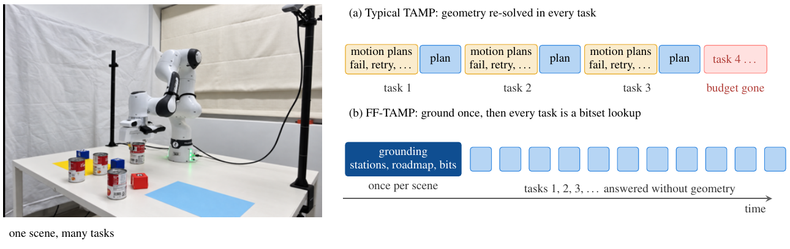

TASK & MOTION PLANNING
FF-TAMP
Geometric blocking relations and dependency-guided planning for efficient multi-query manipulation, validated on a physical Franka robot.

Overview
Long-horizon manipulation requires action sequences that remain geometrically feasible as objects move. In persistent workspaces, repeated task and motion planning (TAMP) queries offer opportunities to reuse geometric information. The challenge is to organize this information so that it supports both motion feasibility tests and manipulation planning while justifying its preprocessing cost. We present Feasibility-First TAMP (FF-TAMP), which combines geometric precomputation with dependency-guided search. For a finite set of placements, grasps, and robot motions, FF-TAMP precomputes which object placements obstruct each motion. These blocking relations guide the selection of objects to relocate and temporary placements, and identify usable roadmap edges. Task search therefore requires no new collision checks or continuous motion-planning calls; extracted trajectories undergo separate validation. We evaluate FF-TAMP through simulation benchmarks and physical robot trials. Across 140 first-attempt trials with a nominal 60s budget, FF-TAMP finds candidate plans for 94.3% of queries, compared with 81.4% for a baseline using the same task guidance with RRT-Connect motion planning. Aggregate online planning time is reduced by a factor of 2.2 across successful and unsuccessful trials; preprocessing and replay are excluded. Relative to the Lazy-TAMP baseline, which performs symbolic planning followed by geometric refinement, the additional preprocessing cost is recovered after one query in the tested sorting sequences and 13–16 queries in selected rearrangement sequences. Experiments on a real Franka robot demonstrate the successful execution of the shape-sorting and tray-to-shelf manipulation tasks.
Framework
